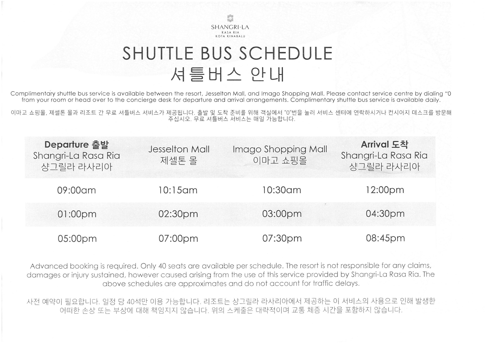
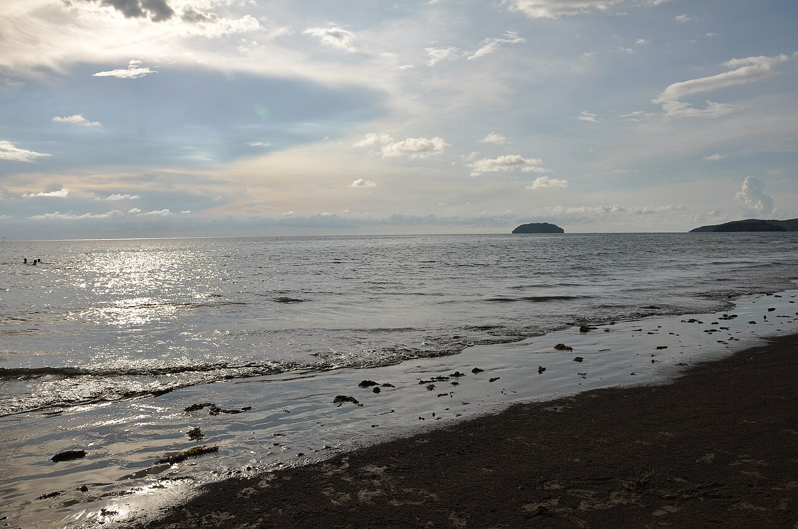
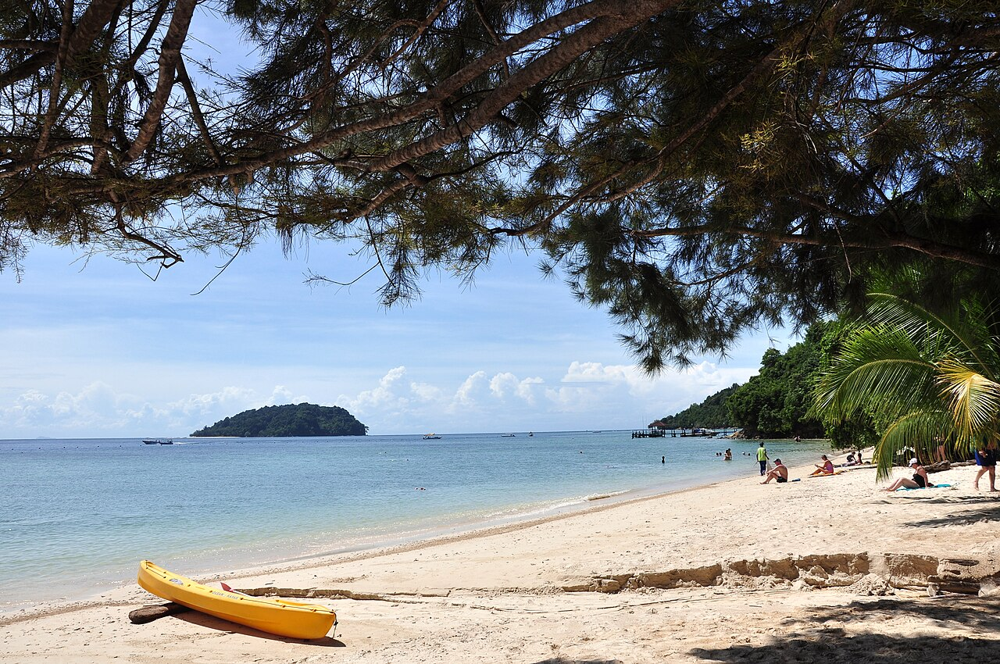
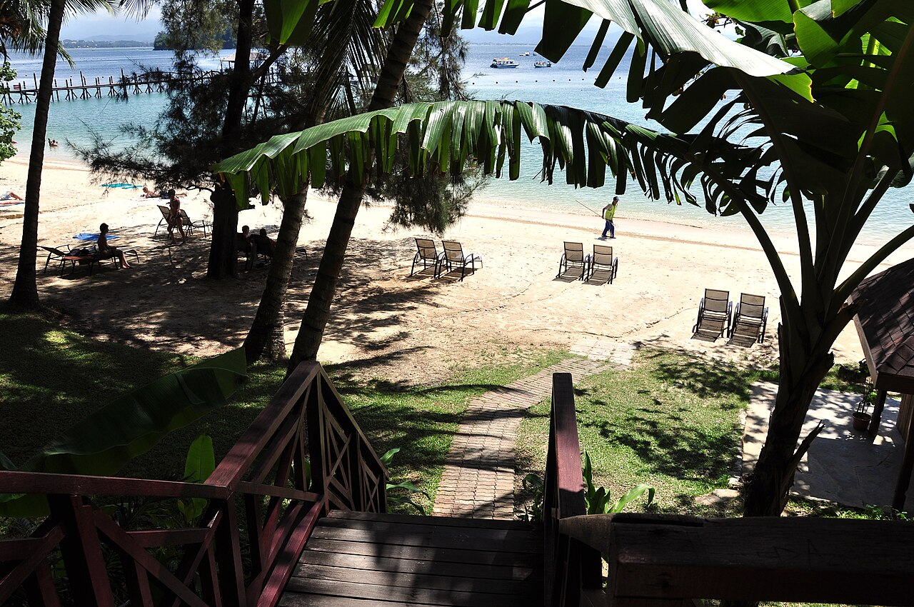
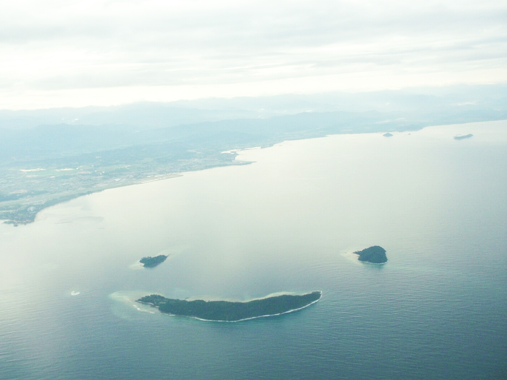
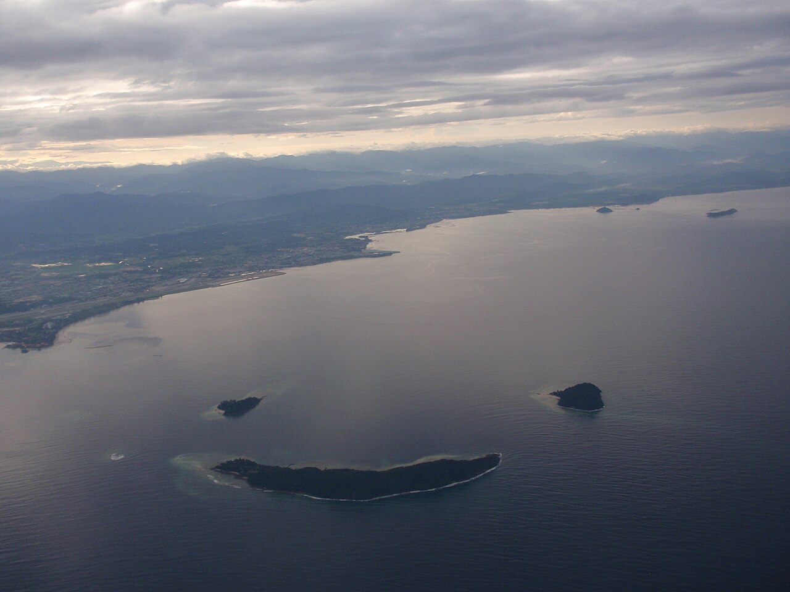
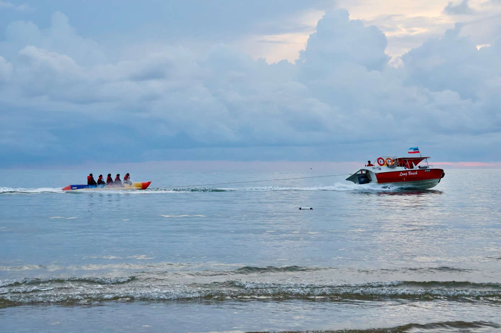
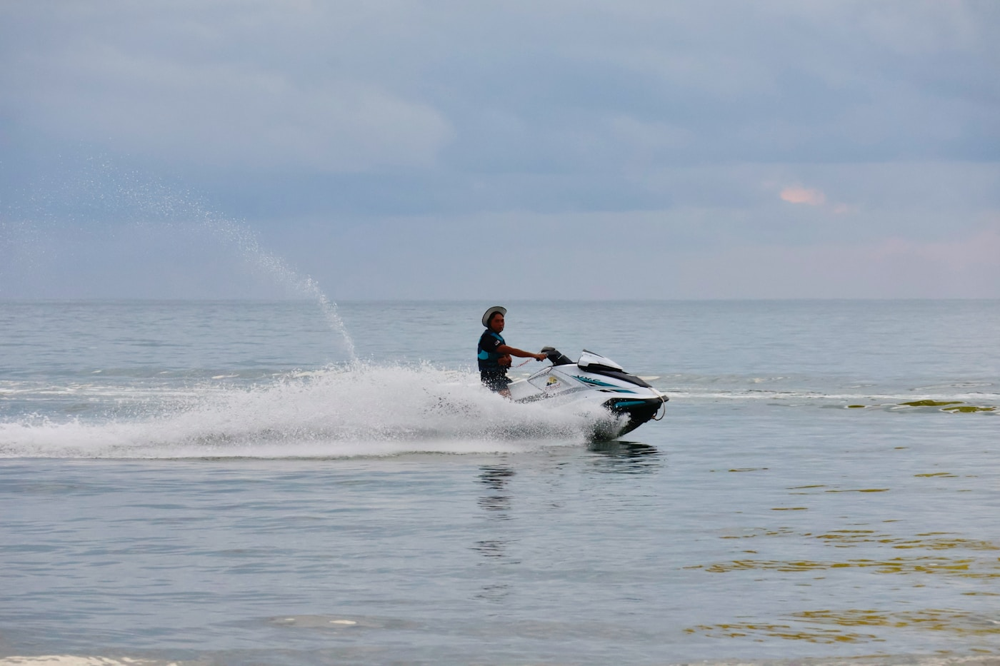

👥 함께 준비
닉네임으로 여행방에 들어가면 준비물 · 출발 전 할 일 · 공지를 서로 실시간으로 공유할 수 있어요. 카톡으로 보낼 때는 Chrome으로 열기를 안내해 주세요.
관리자가 Firebase 프로젝트를 만들면 바로 사용할 수 있습니다.
- Firebase Console에서 웹 앱 추가
js/firebase-config.js에 config 값 붙여넣기- Authentication → Anonymous 사용 설정
- Authorized domains에
kheun0309-maker.github.io추가 - Firestore 생성 후
firebase/firestore.rules게시
자세한 순서: firebase/SETUP.md
어드민(은섹젤): 이름 옆 × 로 참가자를 정리할 수 있어요.
항공·픽업·호핑·반딧불이 등 출발 전 예약/확인 항목을 같이 체크하세요.
공지·예약 링크·지도 링크를 남겨 주세요. https:// 주소는 눌러서 바로 열립니다.
🤖 여행 AI 물어보기
질문뿐 아니라 웹 검색과 일정 추가·수정 제안도 할 수 있어요. 불확실하면 AI가 먼저 묻고, 일정은 적용을 눌러야 저장됩니다. API 키는 이 폰에만 저장됩니다. (여행방 입장 후 일정 적용 가능)
API 키를 붙여넣으면 이 기기에 자동 저장됩니다.
⏱ 지금 시각 · 환율
최근 환율을 불러오는 중…
✈️ 항공 일정
직항 약 5시간 20분 · 터미널 ICN T2 → BKI T1
※ 대한항공 코드셰어(진에어 운항일 가능) · 출국 2.5~3시간 전 공항 도착
가는 편 KE5761과 짝이 되는 귀국편이라 가장 무난합니다.
※ 스케줄은 성수기·요일에 따라 00:35~01:10 / 06:55~07:35로 변동될 수 있어요. 예약 전 대한항공·진에어에서 8/16~17 날짜로 꼭 재확인하세요.
※ 대안: KE5788 (BKI 23:55 → ICN 06:05) — 16일 밤 출발을 원하면 이쪽도 검토
🏨 숙소 · 샹그릴라 라사 리아
Pantai Dalit, Tuaran, Sabah 89208
전화 +60 88-797-888
시내·공항에서 차로 약 45분 · 투아란(Tuaran) 쪽 해변 리조트라 시내와 꽤 멉니다.
KE5761 23:35 도착이면 야간이라 사전 픽업(호텔 리무진/프라이빗)을 강력 추천합니다. 리조트까지 약 45~50분.
- 하기 · 입국심사 — BKI T1. MDAC(디지털 입국신고)는 한국에서 미리. 여권·숙소·귀국편 준비
- 수하물 — Baggage Claim에서 캐리어 수령 (보통 벨트 1~2)
- 도착홀(Arrivals)로 나오기 — 수하물 뒤 출구를 나오면 미팅 존. 유심·환전 부스가 보임
- 피켓 찾기 — Shangri-La / Rasa Ria 또는 이름 피켓을 든 직원을 찾음. 호텔·써드파티 픽업 모두 보통 여기
- 못 찾으면 바로 전화 — 리조트 +60 88-797-888 (공식 안내). 바우처에 적힌 기사 번호도 확인
- 차량 탑승 — 직원이 주차장/픽업 차까지 안내. 짐 확인 후 출발 → 라사 리아 약 45분
그랩을 쓸 때: 한국에서 Grab 앱·카드 등록. 도착홀 밖으로 나온 뒤 호출하고, 앱에 표시된 Gate(출구) 번호를 지정한 뒤 기사에게 메시지로 기둥/게이트 번호를 보내면 엇갈림이 줄어듭니다. 라사 리아까지는 시내보다 멀어 요금이 더 나오고, 심야엔 배차가 늦을 수 있어요.
공항 택시: 입국장 밖 택시 카운터 정찰제(선불). 바가지보다 안전하지만 그랩보다 비싼 편.
· 예약: 객실 예약 시 항공편 입력, 또는 리조트에 최소 하루 전 연락
· 미팅: 도착 터미널(도착홀)에서 직원이 대기 — 공식 안내
· Innova MYR 230 · Van MYR 250 · Alphard MYR 290 · Mercedes MYR 470 (세금 포함, 참고)
심야 할증 00:00~06:00 +50% · 23:35 도착 후 자정 넘기면 할증 가능
예약 4시간 이내 취소 시 100% 위약금
라사 리아 ↔ 시내(제셀톤 · 이마고몰 코스) 셔틀이 하루 몇 회 운행합니다.
· 타기 전 프론트 예약 필수 · 정원 약 40명(만석이면 탑승 불가)
· 후기 기준: 낮 출발 → 저녁 이마고몰 막차(약 19:30)로 복귀하는 경우가 많음
· 야시장 등으로 늦으면 그랩(시내↔리조트 약 MYR 45~50 참고)

시간표 사진 출처: mestone 블로그 · 현장 스케줄은 변경될 수 있으니 프론트에서 한번 더 확인하세요.
KE5762(00:35) 기준이면 16일 저녁에 시내를 보고, 밤늦게 리조트 또는 공항 인근에서 대기 후 이동하는 동선이 됩니다.
리조트 → 공항도 약 45분 + 여유 포함해 출발 3시간 전 공항 도착을 목표로 리무진/그랩을 잡아 두세요.
🗺 동선 지도 · 내 위치
마커를 누르거나 동선을 선택하세요. ‘내 위치’로 현재 위치를 표시합니다.
※ 호핑 선착장(옛 Jesselton Point)은 2026.3.1부터 Jesselton Quay 뒤 South Jetty로 이전되었습니다. 그랩 목적지를 “South Jetty / Jesselton Quay”로 잡으세요.
📅 일자별 일정 0
여행방에 입장하면 일정을 함께 수정·드래그·사진 URL을 넣을 수 있어요.
🍽 시내 추천 맛집
지도·후기 링크로 바로 열어보세요. 버터새우·칠리크랩은 필수 코스!
KK 대표 해산물집. 수조에서 골라 조리법 지정.
시그니처: 버터새우, 칠리크랩, 공심채, 계란볶음밥
Asia City / 힐튼 KK 인근 · 피크타임 대기 많음
오징어튀김·드라이버터새우 호평. Sedco Complex / Kampung Air.
영업 대략 14:30~23:00 · 웰컴과 취향 따라 택1해도 OK
사바식 락사·바쿠테는 시내 골목에서 가볍게. Day4 쇼핑 동선에 끼우기 좋음.
돼지고기 메뉴는 할랄 여부 확인.
가격·메뉴·영업시간은 변동될 수 있어요. 방문 전 지도 앱에서 한번 더 확인하세요.
💆 마사지 · 요금 · 추천
Day3 호핑 후(대략 19:30~)에 가기 좋은 시내 마사지. 요금은 공식/현장 기준 참고값이며 프로모션에 따라 달라질 수 있어요.
· 발 마사지 60분: 약 MYR 45~70
· 전신/오일 마사지 60분: 약 MYR 60~120
· 90분~패키지: 약 MYR 90~160
· 호텔/프리미엄 스파: MYR 150~300+
팁은 필수는 아니지만 MYR 5~10 정도 주는 경우 많음
워터프론트·Warisan Square 인근. 석양 보면서 받기 좋다는 후기 많음.
참고 요금: 발 마사지 60분 MYR 45 · 아로마 바디 60분 MYR 60 · 90분 MYR 90대
오일+발 콤보·핫스톤 등 패키지 있음. 온라인 예약 가능
Warisan Square A1-05. 매일 10:00~03:00로 호핑 늦게 끝나도 가기 좋음.
참고 요금: 발 리플렉솔로지 60분 MYR 68 · 아로마 바디 60분 MYR 78
핫스톤 60분 MYR 118 · 바디+발 패키지 MYR 125~148대
시내 호텔 픽업/드롭 안내하는 경우 있음(조건 확인)
아시아 시티(해산물 식당 일대) 3층. 오래전부터 여행객에게 익숙한 스파.
프로모션에 따라 패키지 MYR 188대부터 시작하는 경우 많음.
Day3 웰컴/쌍천 씨푸드 식사 후 이동하기 편리
사바 전통 느낌의 시그니처 마사지. 가격대는 시내 일반샵보다 높음.
참고: 시그니처 바디 60분 MYR 158 / 90분 MYR 188 / 120분 MYR 238
특별 케어·기념일 분위기를 원할 때
· 호핑 전에 WhatsApp/전화로 19:30~20:30 슬롯 예약 추천
· 샤워 가능한지, 오일/드라이 강도(soft/medium/hard) 미리 말하기
· Warisan Square·Asia City는 그랩으로 이동이 편함
· 리조트 스파는 편하지만 시내보다 비싸고, 늦은 시간 복귀도 고려
MYR 옆 원화는 상단 최근 환율로 자동 환산됩니다. 현장 프로모션이 더 쌀 때도 있어요.
🏝 호핑투어 · 예약방법 · 사진







· 사피 — 스노클링·물놀이, 사람 많음
· 마누칸 — 해변·사진·산책, 패러/씨워킹
· 마무틱 — 작은 섬·스노클링, 성게·아쿠아슈즈
· 집결: Jesselton Quay 뒤 South Jetty (옛 Jesselton Point, 2026.3 이전)
· 라사 리아 → 제티 45~60분 · 아침 일찍 픽업
한국 앱보다 보통 훨씬 저렴. 호핑 하루 전 선착장 부스를 비교하며 예약하세요.
- 목적 정하기 — 섬 개수 / 스노클 장비 / 씨워킹·패러 개수
- 시세 숙지 — 구성에 따라 대략 1인 MYR 150~230대. 첫 부르는 값은 정가
- 부스 2~3곳 비교 — 8~11번대 부스가 자주 언급됨
- 포함 확인 — Terminal fee, 구명조끼, 스노클 장비, 섬 입장료(약 MYR 25/인 별도인 경우 많음), 액티비티
- 영수증 더블체크 — 섬 이름·포함 항목·담당자 연락처. 당일 지참
흥정이 부담되면 KKday · 클룩 · 트립닷컴에서 “코타키나발루 호핑” 검색.
가격은 현지보다 비싼 편이지만 한국어·픽업 포함 상품이 있습니다.
주의: 라사 리아 같은 외곽 리조트는 pickup zone 외/추가요금인 경우가 많으니 상품 설명을 꼭 확인하세요.
전날 예약 → 아침 일찍 차량으로 South Jetty → 영수증 제시 후 보트 → 섬 1~2곳 + 액티비티 → 오후 시내 저녁·마사지.
액티비티가 많으면 섬은 1~2곳이 여유롭습니다. 점심 미포함이면 컵라면·간식 추천.
블로거·후기 연계
- Sabah Parks 공식섬 구성·공원 안내
- 제셀톤 현장 예약 상세rose1538 · 흥정·영수증 체크
- 마무틱 & 마누칸 당일 후기rose1538 · 대기·섬 분위기
- 섬2 + 스노클 흥정 실전whitecow · 포함 항목 팁
- 부스별 흥정 과정stedi · 8~11번 부스
- 사피·마누칸 8월 후기nowonetip · 우기/건기
- 가격·팁 총정리dalmoo · 성게·액티비티
- 호핑 + 마사지 하루 코스donotworry · Day3 패턴
- 패러·씨워킹 포함 후기nadragon · 액티비티 실전
- 선착장 이전 안내Amazing Borneo · South Jetty
호핑 사진: Wikimedia Commons · Unsplash. 가격은 시기·흥정·구성에 따라 달라집니다.
🌙 마지막 날 · 늦게 쉴 대안
귀국편이 심야~새벽(예: 00:35)이면, 리조트에서 버티기보다 공항 근처에서 쉬는 편이 훨씬 편합니다.
A. 공항 캡슐호텔 — Napzone KKIA by Sovotel
KKIA Terminal 1 안(랜드사이드) 캡슐. 샤워·수건·락커·짧은 시간 이용(수 시간 단위) 가능.
시내/리조트에서 저녁 보내고 21:00~22:00경 공항 이동 → 캡슐에서 2~4시간 수면 → 체크인이 현실적인 루트입니다.
Booking/Agoda에서 “Napzone KKIA”로 검색. 남녀 구역·공용 욕실.
B. 에어로포드(Aeropod) · 공항 인근 호텔 1박
공항에서 차로 수 분 거리의 쇼핑몰·호텔이 붙어 있습니다. Day4 체크아웃 후 시내를 보고, 저녁에 에어로포드로 이동해 짧게 잔 뒤 자정 전후 공항으로 가면 됩니다.
캐리어를 낮에 맡겨 두기 좋고, 가족·커플에게 캡슐보다 편할 수 있습니다.
C. 시내 데이유즈 / 늦은 체크아웃 + 공항 직행
시내 호텔에 Day4만 데이유즈(또는 늦은 체크아웃)를 잡고 샤워·짐 정리 후, 밤늦게 공항으로 이동합니다.
공항 대기실에서 쪽잠도 가능하지만 냉방·소음이 있어 Napzone이 훨씬 낫습니다.
D. 라사 리아에 끝까지 머물기
리조트 → 공항 약 45분 + 야간 도로. 00:35 비행이면 대략 21:30 전후 리조트 출발이 안전한데, 그러면 Day4 시내 일정이 애매해집니다.
시내를 제대로 보려면 A 또는 B가 동선상 유리합니다.
10:00 리조트 체크아웃 → 시내 쇼핑·맛집
18:00~20:00 저녁·마사지(선택)
21:00 공항 또는 에어로포드 이동
21:30~23:00 Napzone 수면 / 샤워
23:00~ 체크인·출국 → 00:35 이륙
⚠ 주의사항
1. 리조트가 멀다
공항·시내 모두 약 45~60분. Day3 호핑·Day4 시내는 이동 시간을 일정에 반드시 넣으세요. 그랩은 리조트에서 잡히지 않을 때가 있어, 리조트 데스크에 차량을 미리 부탁하는 게 안전합니다.
2. 야간 도착 픽업
현장 택시 흥정은 야간에 불리합니다. 호텔 리무진을 하루 전 예약하고, 항공편 번호(KE5761)·도착 23:35를 알려 주세요. 자정 넘기면 심야 할증(+50%) 가능.
3. 날씨·모기
8월 사바는 더운 열대 기후(낮 30°C 전후). 갑작스런 소나기 대비. 반딧불이·맹그로브는 모기가 많으니 기피제 필수.
4. 입국·환전
한국 여권은 단기 관광 무비자(통상 90일). 귀국 항공권·숙소 정보를 보여 달라는 경우 있음. 공항·시내 환전소 이용 가능. 카드 결제는 리조트·대형몰 위주.
5. 호핑 안전
해파리·산호 대비 아쿠아슈즈 추천. 귀중품은 방수팩. 음주 후 스노클링 금지. 자외선이 강해 래시가드가 편합니다.
6. 귀국편은 미정
가이드에 넣은 KE5762는 추천안입니다. 확정되면 시간·편명을 알려 주시면 일정표를 수정해 드립니다.
🎒 챙길 품목 (이 기기만)
혼자 쓰는 개인 체크입니다. 서로 공유하려면 함께 준비를 사용하세요.
- 여권 · 항공 e-티켓 · 숙소 예약 확인서(픽업·입국 대비)
- 국제운전면허(렌트 시) / 여행자보험 증권
- 멀티어댑터(말레이시아 Type G 3구) · 보조배터리
- 선크림 SPF50 · 모자 · 선글라스
- 수영복 · 래시가드 · 아쿠아슈즈 · 마이크로파이버 타월
- 방수팩 / 지퍼백 · 여벌 속옷·양말
- 모기 기피제 · 얇은 긴팔·긴바지(반딧불이용)
- 상비약(해열진통·소화·밴드·멀미약)
- 현금 소액 MYR + 카드 1~2장
- 우산 또는 가벼운 우비 · 슬리퍼
- 수면안대·귀마개(가는 편 야간 비행)
- 드라이백 / 휴대폰 방수 케이스(호핑)
체크는 이 기기 브라우저에만 저장됩니다.
✅ 출발 전 할 일 (이 기기만)
함께 체크하려면 함께 준비 → 출발 전 탭을 쓰세요. 아래는 이 기기 개인용 백업입니다.
- KE5761 좌석·수하물 확인 · 인천 T2 체크인 시간 메모
- 귀국편 예약 (추천: KE5762 8/17 00:35경)
- 라사 리아 공항 픽업 예약 (항공편·인원·캐리어 수 전달)
- 리조트 Activity Desk에 8/14 반딧불이(Sunset+Fireflies) 예약
- 8/15 호핑투어 예약 + 리조트→제티 픽업 시간 확정
- 시내 마사지 대략 시간대 예약(호핑 후 19:30~)
- 귀국일 리조트→공항 차량 예약
- 늦은 비행 대비 Napzone KKIA 또는 에어로포드 짧게 예약
- 호핑투어(South Jetty / Jesselton Quay) + 리조트→시내 픽업 시간 확정
요금·스케줄은 공식 사이트/예약 시점에 따라 달라질 수 있습니다.